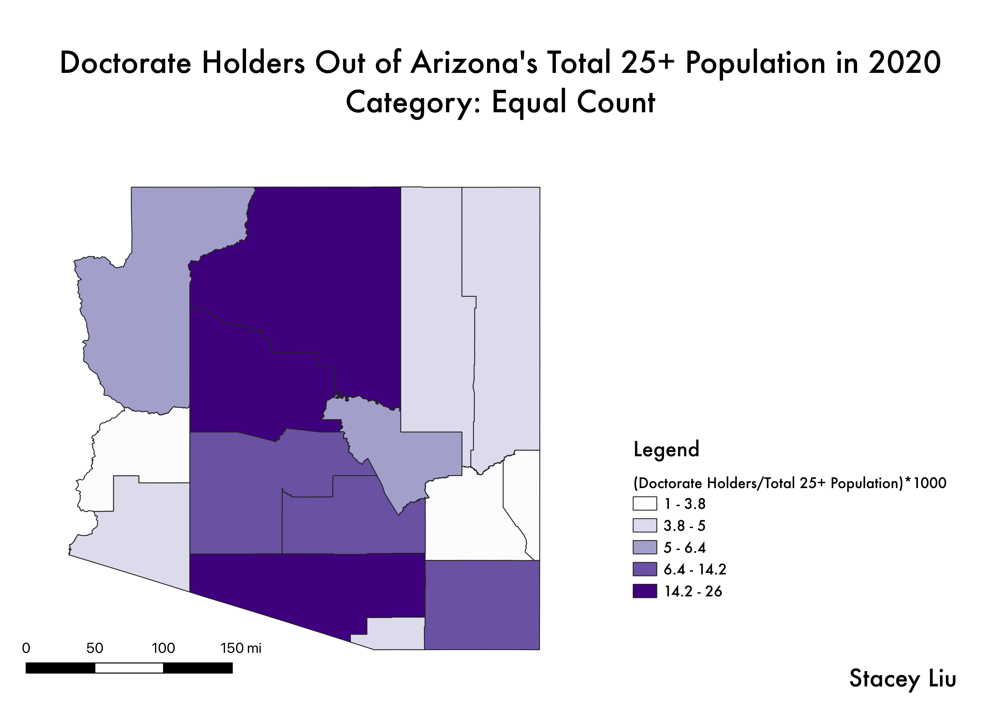
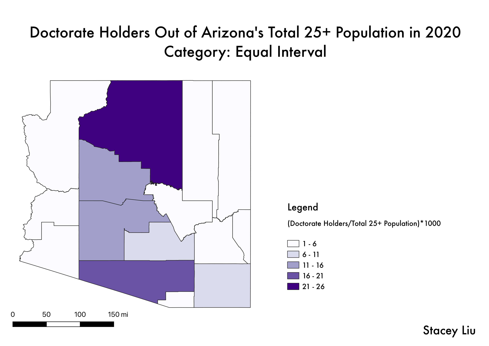
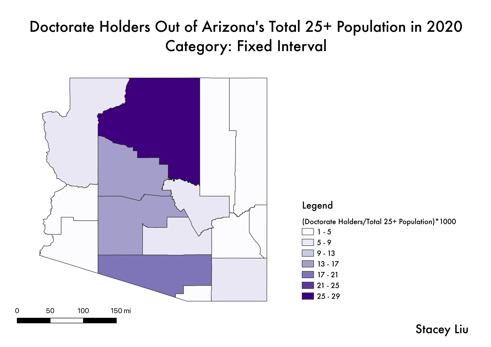

Homework 6
Stacey Liu
Part 1
The map displayed measures the number of doctorate degree holders aged 25 or older per county in Arizona in 2020. The data used was taken from a 2020 table measuring the highest level of education in adults aged 25 or older by county in Arizona.

Data used for this project
CSV dataset
Link to shapefile
Part 2
The ratio that I used for the following three maps was doctorate holders aged 25+ in Arizona divided by the total population aged 25+ in Arizona. I multiplied the ratio by 1000 to get the resulting values over 1. I chose this ratio because I believed that Arizona's 25+ population was the best option to put the number of doctorate holders 25+ by county into proportion. Also, most of the other data options I could have used for the ratio would not have captured the whole sample population, and I did not want to use the total population because it would have included people like children who could not possibly hold a doctorate.
Equal Count

Equal Interval

Fixed Interval
